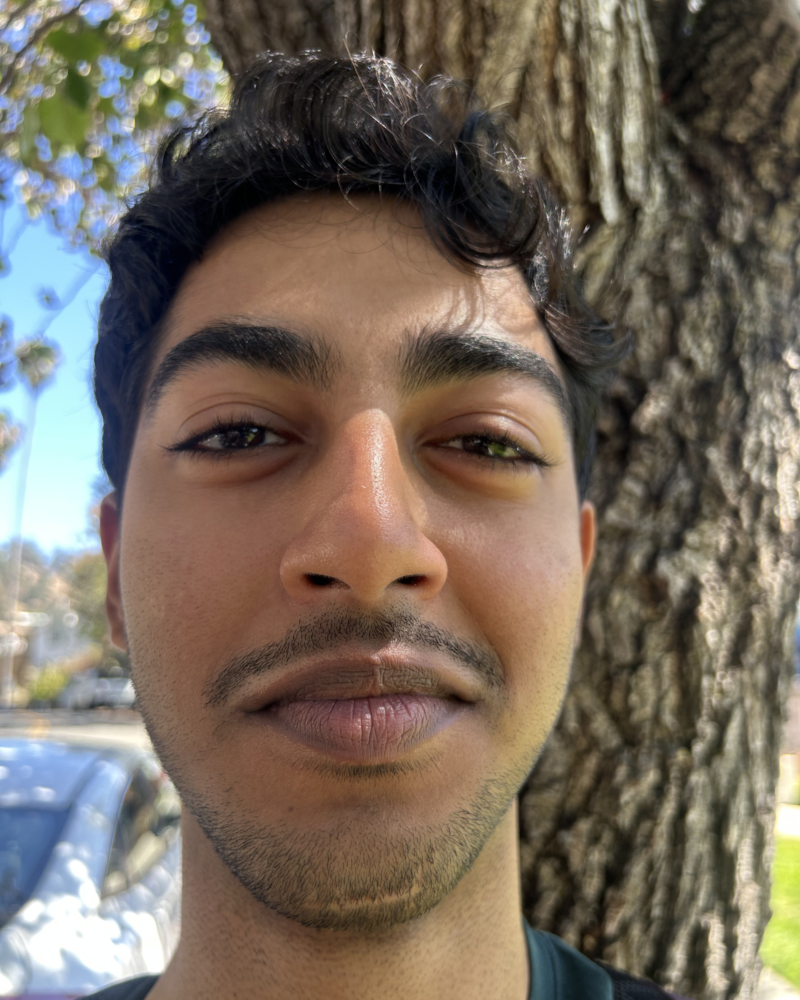
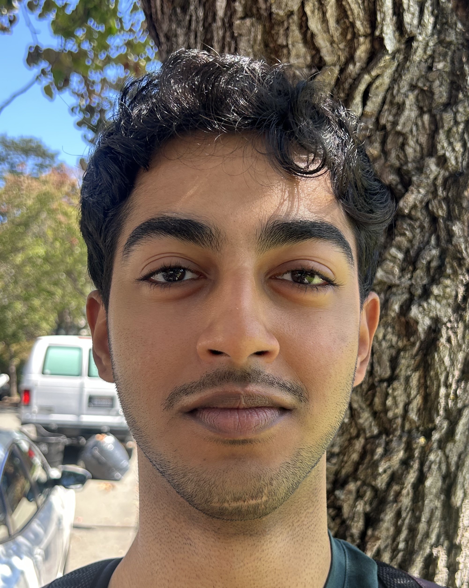
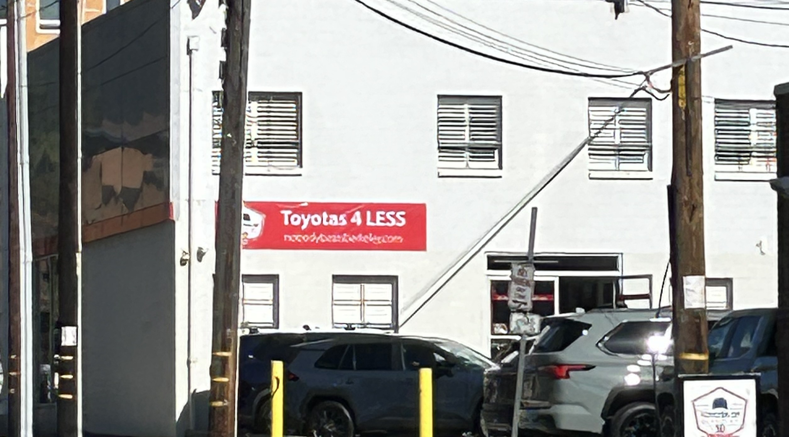
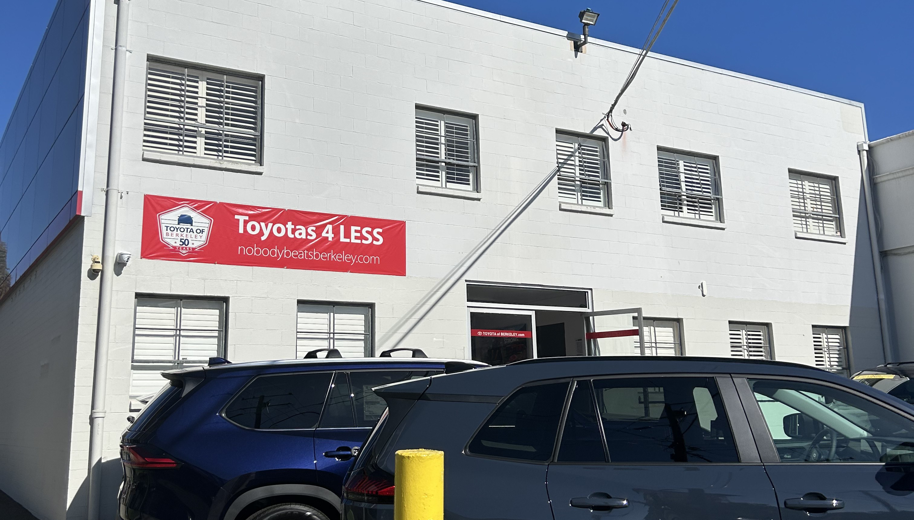
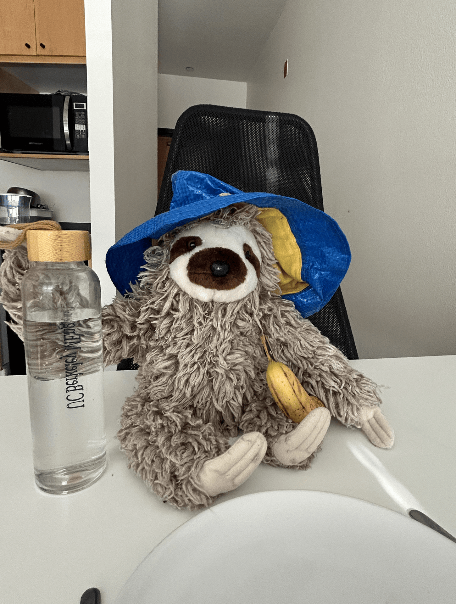

Selfie: The Wrong Way vs. The Right Way

Varun from 20 centimeters.

Varun from 40 centimeters.
Varun from 2 meters.
While stepping away from Varun, the relative distance between the camera and the rest of his face becomes closer to the distance between the camera and the center of his face. This explains why the further away the camera is, the more natural the image appears.
Architectural Perspective Compression

Toyota Berkeley from far away.

Toyota Berkeley from up close.
In the first picture the car dealership looks flattened because, similarly to the pictures of Varun, the relative distances between the different parts of the building and the camera are more similar when viewed from far away. Whereas from up close, the relative distance between the different parts of the building and the camera aren't relatively as close.
Dolly Zoom !!!

Pictures taken while moving the camera back and zooming in.